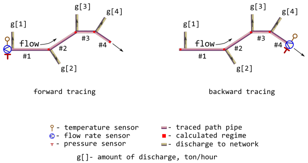

Minenergo-325. Trace thermal-hydraulic regime for linear segment of district heating network
Source:R/m325traceline.R
m325traceline.RdTrace values of thermal-hydraulic regime (temperature, pressure, flow_rate, and other) along the adjacent linear segments of pipeline using norms of heat loss values prescribed by Minenergo Order 325.
Usage
m325traceline(
temperature = 130,
pressure = mpa_kgf(6),
flow_rate = 250,
g = 0,
d = 700,
len = c(600, 530, 300, 350),
year = 1986,
insulation = 0,
laying = "underground",
beta = FALSE,
exp5k = TRUE,
roughness = 0.006,
inlet = 0,
outlet = 0,
elev_tol = 0.1,
method = "romeo",
forward = TRUE,
absg = TRUE
)Arguments
- temperature
Traced thermal hydraulic regime. Sensor-measured temperature of heat carrier (water) inside the pipe sensor-measured at the inlet (forward tracing) or at the outlet (backward tracing) of path, [°C]. Type:
assert_number.- pressure
Traced thermal hydraulic regime. Sensor-measured absolute pressure of heat carrier (water) sensor-measured at the inlet (forward tracing) or at the outlet (backward tracing) of path, [MPa]. Type:
assert_number.- flow_rate
Traced thermal hydraulic regime. Amount of heat carrier (water) sensor-measured at the inlet (forward tracing) or at the outlet (backward tracing) of path, [ton/hour]. Type:
assert_number.- g
amount of heat carrier discharge to network for each pipe segment in the tracing path enumerated along the direction of flow. If flag
absgisTRUEthen they treat argumentgas absolute value in [ton/hour], otherwise they do as percentage of flow_rate in the pipe segment. Type:assert_double.- d
internal diameters of subsequent pipes in tracing path that are enumerated along the direction of flow, [mm]. Type:
assert_double.- len
length of subsequent pipes in tracing path that are enumerated along the direction of flow, [m]. Type:
assert_double.- year
year when pipe is put in operation after laying or total overhaul for each pipe in tracing path enumerated along the direction of flow. Type:
assert_integerish.- insulation
insulation that covers the exterior of pipe:
0no insulation
1foamed polyurethane or analogue
2polymer concrete
for each pipe in tracing path enumerated along the direction of flow. Type:
assert_numericandassert_subset.- laying
type of pipe laying depicting the position of pipe in space:
airchannelroomtunnelunderground
for each pipe in tracing path enumerated along the direction of flow. Type:
assert_characterandassert_subset.- beta
logical indicator: should they consider additional heat loss of fittings? Logical value for each pipe in tracing path enumerated along the direction of flow. Type:
assert_logical.- exp5k
logical indicator for regime of pipe: is pipe operated more that
5000hours per year? Logical value for each pipe in tracing path enumerated along the direction of flow. Type:assert_logical.- roughness
roughness of internal wall for each pipe in tracing path enumerated along the direction of flow, [m]. Type:
assert_double.- inlet
elevation of pipe inlet for each pipe in tracing path enumerated along the direction of flow, [m]. Type:
assert_double.- outlet
elevation of pipe outlet for each pipe in tracing path enumerated along the direction of flow, [m]. Type:
assert_double.- elev_tol
maximum allowed discrepancy between adjacent outlet and inlet elevations of two subsequent pipes in the traced path, [m]. Type:
assert_number.- method
method of determining Darcy friction factor
romeovatankhanbuzelli
Type:
assert_choice. For more details seedropp.- forward
tracing direction flag: is it a forward direction of tracing? If
FALSEthe backward tracing is performed. Type:assert_flag.- absg
Whether argument
g(amount of heat carrier discharge to network) is an absolute value in [ton/hour] (TRUE) or is it a percentage of flow rate in the pipe segment (FALSE)? Type:assert_flag.
Value
list containing results (detailed log) of tracing for each pipe
in tracing path enumerated along the direction of flow:
temperatureTraced thermal hydraulic regime. Traced temperature of heat carrier (water), [°C]. Type:
assert_double.pressureTraced thermal hydraulic regime. Traced pressure of heat carrier (water) for each pipe in tracing path enumerated along the direction of flow, [MPa]. Type:
assert_double.flow_rateTraced thermal hydraulic regime. Traced flow rate of heat carrier (water) for each pipe in tracing path enumerated along the direction of flow, [ton/hour]. Type:
assert_double.lossTraced thermal hydraulic regime. Normative specific heat loss power for each pipe in tracing path enumerated along the direction of flow, [kcal/m/h]. Type:
assert_double.fluxTraced thermal hydraulic regime. Normative heat flux for each pipe in tracing path enumerated along the direction of flow, [W/m^2]. Type:
assert_double.QTraced thermal hydraulic regime. Normative heat loss for each pipe in tracing path enumerated along the direction of flow per day, [kcal]. Type:
assert_double.
Type: assert_list.
Details
The calculated (values of) regime may be considered as representation of district heating process in conditions of hypothetically perfect technical state of pipe walls and insulation.
They consider only simple tracing paths which do not contain rings and any kind of parallelization. At the same time bidirectional (forward and backward) tracing is possible in accordance with sensor position. They also may consider discharges to network at the inlet of each pipeline segment as an approximation of actual forks of flows. Relevant illustration of adopted assumptions for 4-segment tracing path is depicted on the next figure.

They make additional check for consistency of inlet and outlet
values for subsequent pipe segments. Discrepancy of appropriate elevations
cannot be more than elev_tol.
Since inner diameter of the pipe is used as input, the the thickness of the pipe wall additionally considered in heat flux calculations. Pipe wall thickness is derived from pipe diameter using GOST 30732 specifications.
See also
Other Regime tracing:
m325tracebw(),
m325tracefw(),
tracebw(),
tracefw(),
traceline()
Examples
library(pipenostics)
# Consider 4-segment tracing path depicted in ?m325regtrace help page.
# First, let sensor readings for forward tracing:
t_fw <- 130 # [°C]
p_fw <- mpa_kgf(6)*all.equal(.588399, mpa_kgf(6)) # [MPa]
g_fw <- 250 # [ton/hour]
# Let discharges to network for each pipeline segment are somehow determined as
discharges <- seq(0, 30, 10) # [ton/hour]
# Then the calculated regime (red squares) for forward tracing is
regime_fw <- m325traceline(t_fw, p_fw, g_fw, discharges, forward = TRUE)
print(regime_fw)
#> $temperature
#> [1] 129.1799 128.4269 127.9628 127.3367
#>
#> $pressure
#> [1] 0.5878607 0.5874226 0.5872143 0.5870330
#>
#> $flow_rate
#> [1] 250 240 220 190
#>
#> $loss
#> [1] 348.0000 347.1389 346.3483 345.8610
#>
#> $flux
#> [1] 181.9600 181.5097 181.0963 180.8415
#>
#> $Q
#> [1] 5011200 4415607 2493707 2905232
#>
# $temperature
# [1] 129.1799 128.4269 127.9628 127.3367
#
# $pressure
# [1] 0.5878607 0.5874226 0.5872143 0.5870330
#
# $flow_rate
# [1] 250 240 220 190
#
# $loss
# [1] 348.0000 347.1389 346.3483 345.8610
#
# $flux
# [1] 181.9600 181.5097 181.0963 180.8415
#
# $Q
# [1] 5011200 4415607 2493707 2905232
# Next consider values of traced regime as sensor readings for backward tracing:
t_bw <- 127.3367 # [°C]
p_bw <- .5870330 # [MPa]
g_bw <- 190 # [ton/hour]
# Then the calculated regime (red squares) for backward tracing is
regime_bw <- m325traceline(t_bw, p_bw, g_bw, discharges, forward = FALSE)
print(regime_bw)
#> $temperature
#> [1] 129.9953 129.1769 128.4254 127.9619
#>
#> $pressure
#> [1] 0.5883998 0.5878611 0.5874228 0.5872144
#>
#> $flow_rate
#> [1] 250 250 240 220
#>
#> $loss
#> [1] 347.1358 346.3467 345.8599 345.2035
#>
#> $flux
#> [1] 181.5081 181.0955 180.8410 180.4978
#>
#> $Q
#> [1] 4998755 4405529 2490192 2899710
#>
# $temperature
# [1] 129.9953 129.1769 128.4254 127.9619
#
# $pressure
# [1] 0.5883998 0.5878611 0.5874228 0.5872144
#
# $flow_rate
# [1] 250 250 240 220
#
# $loss
# [1] 347.1358 346.3467 345.8599 345.2035
#
# $flux
# [1] 181.5081 181.0955 180.8410 180.4978
#
# $Q
# [1] 4998755 4405529 2490192 2899710
# Let compare sensor readings with backward tracing results:
tracing <- with(regime_bw, {
lambda <- function(val, constraint)
c(val, constraint, constraint - val,
abs(constraint - val)*100/constraint)
first <- 1
structure(
rbind(
lambda(temperature[first], t_fw),
lambda(pressure[first], p_fw),
lambda(flow_rate[first], g_fw)
),
dimnames = list(
c("temperature", "pressure", "flow_rate"),
c("sensor.value", "traced.value", "abs.discr", "rel.discr")
)
)
})
print(tracing)
#> sensor.value traced.value abs.discr rel.discr
#> temperature 129.9952943 130.000000 4.705723e-03 0.0036197868
#> pressure 0.5883998 0.588399 -8.215938e-07 0.0001396321
#> flow_rate 250.0000000 250.000000 0.000000e+00 0.0000000000
# sensor.value traced.value abs.discr rel.discr
# temperature 129.9952943 130.000000 4.705723e-03 0.0036197868
# pressure 0.5883998 0.588399 -8.215938e-07 0.0001396321
# flow_rate 250.0000000 250.000000 0.000000e+00 0.0000000000